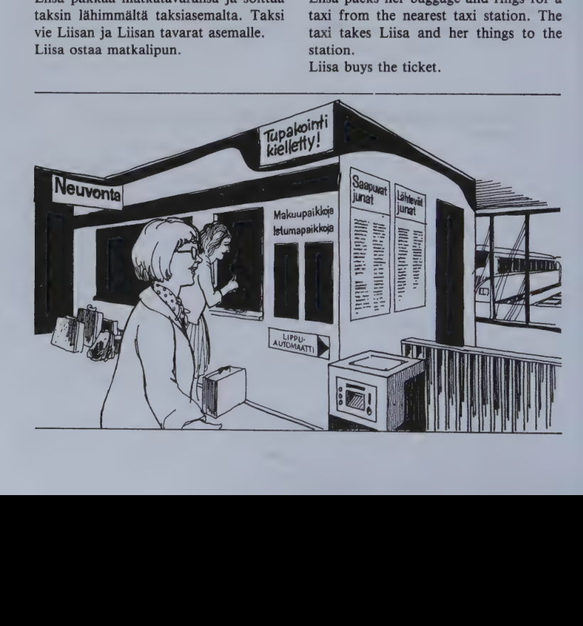
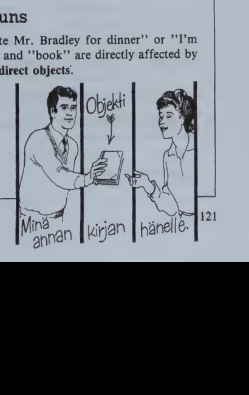

Kappale 25 / Lesson 25#
Muistatko sina minut viela? / Do you still remember me?#
Vanhat toverit tapaavat / Old friends meet
Suomi |
English |
|---|---|
1. Arto. Terve, Veikko! |
1. Arto. Hello, Veikko! |
2. Veikko. No terve, terve! Pitkasta aikaa! |
2. Veikko. Well, hello! It’s been a long time! |
3. A. Tunnetko sina minut viela? |
3. A. Do you still recognize me? |
4. V. Totta kai tunnen. Sina olet vanha luokkatoverini Koskisen Arto. Mita sina teet Oulussa? |
4. V. Of course I do. You’re my old classmate, Arto Koskinen. What are you doing in Oulu? |
5. A. Mina olen taalla tyomatkalla Kari Peltonen ja Heikki Lampio kanssa. Muistatko sina heidat? |
5. A. I’m here on a business trip with Kari Peltonen and Heikki Lampio. Do you remember them? |
6. V. Kari Peltonen … hanet mina kylla muistan. Mutta Heikki Lampio - hanta mina en muista. |
6. V. Kari Peltonen … I do remember him. But Heikki Lampio - I don’t remember him. |
7. A. Voi olla, etta sina et tunne hanta. Han oli eri koulussa. Tai ainakin eri luokalla. |
7. A. It’s possible that you don’t know him. He was in a different school. Or at least in a different class. |
8. V. Kauanko sina olet Oulussa? |
8. V. How long are you staying in Oulu? |
9. A. Kolme paivaa. |
9. A. Three days. |
10. V. Mina haluaisin kutsua sinut meille, jos sinulla on aikaa. Meidan asunto ei ole kaukana keskustasta. Kavelet Kauppakatua suoraan eteenpain puoli kilometria ja kaannyt sitten oikealle, Isokadulle. Sina loydat sinne helposti. Tule paivalliselle huomenna. Paivi haluaisi varmasti myos tavata sinut. |
10. V. I’d like to invite you to my home if you have time. Our apartment is not far from the center. You walk straight along Kauppakatu for half a kilometer and then turn right into Isokatu. You’ll find it easily. Come and have dinner with us tomorrow. Paivi would certainly like to meet you, too. |
11. A. Ja mina haluaisin tavata teidat molemmat. Kiitos vain, mutta en tieda viela, onko minulla aikaa. Anna minulle puhelinnumerosi, niin mina soitan sinulle. |
11. A. And I’d like to see both of you. Thank you, but I don’t know yet if I’ll have the time. Give me your phone number, I’ll call you. |
12. V. Tassa on minun korttini, siina on osoite ja puhelinnumero. |
12. V. Here’s my card with my address and telephone number. |
13. A. Mina soitan sitten teille. Terveisia Paiville! |
13. A. I’ll call you then. Love to Paivi! |
Kenet tapaat illalla? Hanet.
Kenelle kirjoitat? Hanelle.
missa? taalla tuolla siella
mista? taalta tuolta sielta
mihin? tanne tuonne sinne
minne?
kuka? ei kukaan
mika? ei mikaan
missa? ei missaan
milloin? ei milloinkaan
koska? ei koskaan
Kielioppia / Structural notes#
1. Object forms of personal pronouns and “kuka”#
In the English sentence “We often invite him for dinner” him indicates a person directly affected by the action of the verb and is therefore called the direct object.
Finnish |
English |
|---|---|
Kene/t rouva Virtanen kutsuu? |
Who will Mrs. V. invite? |
Rva V. kutsuu minu/t, sinu/t, hane/t, meida/t, teida/t, heida/t. |
Mrs. V. will invite me, you, him/her, us, you, them. |
The six personal pronouns and the pronoun kuka have a special object form (accusative) which ends in -t. It is only used in affirmative sentences.
Finnish |
English |
|---|---|
Ke/ta rouva Virtanen ei kutsu? |
Whom won’t Mrs. V. invite? |
Rva V. ei kutsu minu/a, sinu/a, han/ta, mei/ta, tei/ta, hei/ta. |
Mrs. V. won’t invite me, you, him/her, us, you, them. |
In negative sentences, the direct object is in the partitive.
Note: For various reasons, the partitive may occur in affirmative sentences as well, for instance with verbs generally used with the partitive:
Finnish |
English |
|---|---|
Voinko auttaa tei/ta? |
Can I help you? |
Mina rakastan sinu/a. |
I love you. |
(More about this in lesson 29:3.)
Note also:
Do not mix up the direct object with what English grammar calls the indirect object. It answers the question “to whom”, “for whom” and corresponds to the Finnish “onto” case:
Finnish |
English |
|---|---|
Anna minulle kylmaa vetta! |
Give me some cold water! |
Mina esittelen heidat sinulle. |
I’ll introduce them to you. |
Kertokaa meille kaikki! |
Tell us everything! |
2. Words ending in -nen (“nainen” words)#
Finnish |
English |
|---|---|
Olen niin onnellinen! |
I’m so happy! |
Onnellista uutta vuotta! |
Happy New Year! |
Onnellisen elaman salaisuus. |
The secret of a happy life. |
On ilo nahda onnellisia ihmisia. |
It is a pleasure to see happy people. |
Finnish has a large number of nouns and adjectives which end in -nen in their basic form. Note the following points about this word type:
The element -nen only appears in the basic form;
All other forms have the element -s-, and the principal parts are nainen naista naisen naisia;
The stem form nais- is used as the first part of compound words:
nais/poliisi, nais/laakari
helsinkilais/perhe = helsinkilainen perhe
ruotsalais-suomalainen sanakirja
Sanasto / Vocabulary#
Finnish |
English |
|---|---|
ainakin |
at least |
eteen/pain |
forward, ahead |
haluaisin |
I’d like to |
kaukana (# lahella) |
far away, at a distance |
+kortti-a kortin kortteja |
card |
kutsu/a kutsun |
to call, invite |
+kaanty/a |
to turn, be turned |
kaanny/n-t kaantyy |
|
kaanny/mme-tte kaantyvat |
|
+luokka-a luokan luokkia |
class |
+loyta/a |
to find, discover |
loyda/n-t loytaa |
|
loyda/mme-tte loytavat |
|
+molemmat molempia (molempien) |
both, the two |
muista/a muistan (# unohtaa) |
to remember, recall |
pitkasta aikaa! |
it’s been a long time! |
sinne (cp. siella, sielta) |
there(to), to that place |
suoraan (from suora straight, direct) |
straight, directly |
totta kai (= tietysti) |
of course, naturally |
toveri-a tovereita (= kaveri colloq.) |
companion, friend, pal, comrade |
varma-a-n varmoja (# epa/varma) |
sure, certain |
*
Finnish |
English |
|---|---|
ei kukaan ketaan kenenkaan keitaan |
nobody, no one, none |
ei missaan |
nowhere |
Kappale 26 / Lesson 26#
Liisa Salo lahtee matkalle / Liisa Salo takes a trip#
Liisa Salon taytyy matkustaa Vaasaan. Mutta kuinka? Lentaminen on nopeaa, mutta kallista. Liisa ajattelee asiaa: parempi matkustaa yojunalla.
Minulla on kai aikataulu … Joo, mutta tama on liian vanha. Paras kysya asemalta.
Suomi |
English |
|---|---|
1. L. Mihin aikaan Vaasan yojuna lahtee Helsingista? |
1. L. What time does the night-train to Vaasa leave Helsinki? |
2. Neuvonta. Hetkinen … Lahtoaika on 22.00, laituri 3. |
2. Information. Just a moment … The time of departure is 22.00, platform 3. |
3. L. Ja koska se saapuu Vaasaan? |
3. L. And when does it arrive in Vaasa? |
4. N. Kello 6.35. |
4. I. At 6.35. |
5. L. Selva on, kiitos, kuulemiin. |
5. L. All right, thank you, goodbye. |
Liisa pakkaa matkatavaransa ja soittaa taksin lahimmalta taksiasemalta. Taksi vie Liisan ja Liisan tavarat asemalle. Liisa ostaa matkalipun.

Suomi |
English |
|---|---|
6. L. Vaasa, meno. Onko makuupaikkoja jaljella? |
6. L. A single to Vaasa, please. Are there any sleeping berths left? |
7. Lipunmyyja. Ei ole. |
7. Ticket clerk. No, there aren’t. |
8. L. No, sitten pikajunan paikkalippu. Ei-tupakkavaunu. Ikkunapaikka, jos on. |
8. L. A seat-ticket, then, for the express train. A non-smoker. A window seat, if there is one. |
9. Lipunmyyja. Katsotaan. Kylla taalla on. (Antaa Liisalle paikkalipun.) |
9. Clerk. Let’s see. Yes, there is. (Gives Liisa the seat-ticket.) |
Liisa ostaa viela postimerkin ja panee kirjeen postilaatikkoon. Sen jalkeen han ostaa lukemista: iltalehden ja pari naistenlehtea. Han loytaa helposti oikean junan ja vaunun. Ja nyt han istuu junassa. Kello on 22.00. Matka voi alkaa.
Ihmiset ostavat matkalippuja:
- Espoo, meno-paluu.
- Kauniainen, kymmenen matkan lippu.
- Korso-Helsinki, kuukausilippu.
Juna- ja metrolippuja saa myos automaatista.
Ota omenia!
Saanko yhden?
Saanko kaksi?
Kielioppia / Structural notes#
1. The direct object of nouns#
In the English sentence “We often invite Mr. Bradley for dinner” or “I’m giving the book to her”, “Mr. Bradley” and “book” are directly affected by the action of the verb, that is, they are direct objects:

Unlike personal pronouns, Finnish nouns have no specific accusative forms. Instead, the direct object of nouns is expressed as follows.
Affirmative sentence |
English |
Negative sentence |
English |
|
|---|---|---|---|---|
Sing. |
Otan kirja/n. |
I take a/the book. |
En ota kirja/a. |
I do not take a/the book. |
Cp. |
Otan raha/a. |
I take some money. |
En ota raha/a. |
I do not take any money. |
Pl. |
Otan kirja/t. |
I take the books. |
En ota kirjoj/a. |
I do not take the books. |
Cp. |
Otan kirjoj/a. |
I take some books. |
En ota kirjoj/a. |
I do not take any books. |
Note the following points:
In negative sentences, the direct object is always in the partitive.
If the direct object expresses indefinite amount or number, it is always in the partitive (raha/a, kirjoj/a).
If the direct object is one countable thing (or definite amount, e.g. the money), it is in the genitive (kirja/n).
If the direct object expresses definite number, it is in the basic form pl. (kirja/t).
(When the genitive and the basic form are used as direct objects, they are often called accusatives.)
The basic form is used instead of the genitive in imperative and taytyy sentences:
Finnish |
English |
|---|---|
Ota kirja! (cp. Ota rahaa!) |
Take a/the book! |
Sinun taytyy ottaa kirja (rahaa). |
You must take a/the book. |
Note.
Finnish |
English |
|---|---|
Sing. Otan kirja/n. |
I take a/the book. |
Otan kirja/ni. |
I take my book. (See 6:1.) |
Pl. Otan kirja/t. |
I take the books. |
Otan kirja/ni. |
I take my books. (See 12:1.) |
Note also:
Finnish |
English |
|---|---|
Otan yhde/n (omena/n). |
I take one (apple). |
Otan kaksi (omena/a). |
I take two (apples). |
(There will be a review of the direct object in 39:1.)
Important to remember: In a sentence with a direct object, the subject must never be in the partitive:
LAPSET
Lapsia syovat omenia.
2. “Aion olla Suomessa vuoden”#
Finnish |
English |
|---|---|
Kuinka kauan sina aiot olla Suomessa? |
How long are you going to stay in Finland? |
Vuode/n. (Kaksi vuotta.) |
A year. (Two years.) |
Kuinka kauan sina olet ollut taalla? |
How long have you been here? |
Kuukaude/n. (Kolme kuukautta.) |
A month. (Three months.) |
Kuinka usein teilla on suomea? |
How often do you have Finnish? |
Kerran (kaksi kertaa) viikossa. |
Once (twice) a week. |
Kuinka pitkan matkan kavelet joka paiva? |
What distance do you walk every day? |
Kilometri/n. (Kolme kilometria.) |
One kilometer. (Three kilometers.) |
When answering the questions “how long? how many times? what distance?” the forms used are the same as for the direct object.
Note:
Finnish |
Finnish |
Note |
|---|---|---|
Ostan kirjan. |
En osta kirjaa. |
Partitive in the negative sentence |
Kavelen kilometrin. |
En kavele kilometria. |
Partitive in the negative sentence |
Poydalla on kirja. |
Poydalla ei ole kirjaa. |
Partitive in the negative sentence |
Pojalla on kirja. |
Pojalla ei ole kirjaa. |
Partitive in the negative sentence |
but:
Finnish |
Finnish |
|---|---|
Tama on kirja. |
Tama ei ole kirja. |
Kirja on kallis. |
Kirja ei ole kallis. |
Sanasto / Vocabulary#
Finnish |
English |
|---|---|
aika/taulu-a-n-ja |
timetable, schedule |
asema-a-n asemia |
station; position, location |
asia-a-n asioita |
thing, matter; errand; question, point |
+automaatti-a automaatin automaatteja |
automatic, automate |
juna-a-n junia |
train |
jaljella |
left, remaining |
+kuu/kausi-kautta-kauden-kausia |
month |
kuulemiin (cp. nakemiin) |
goodbye (in telephone conversations) |
+laatikko-a laatikon laatikkoja |
box; drawer |
laituri-a-n laitureita |
platform, pier, landing, wharf |
+lenta/a |
to fly |
lenna/n-t lentaa |
|
lenna/mme-tte lentavat |
|
+lahto-a lahdon lahtoja |
leaving, going away, departure |
+makuu/paikka-a-paikan-paikkoja |
sleeping berth |
+matka/lippu-a-lipun-lippuja |
ticket |
matka/tavara-a-n-tavaroita |
baggage, luggage |
matkusta/a matkustan |
to travel, go, tour |
+neuvonta-a neuvonnan (from neuvo advice, neuvo/a to advise) |
guiding, information |
+paka/ta pakkaan |
to pack |
paluu-ta-n (from pala/ta to return) |
return, coming back, going back |
pika/juna |
express train |
+posti/merkki-a-merkin-merkkeja |
(postage) stamp |
+saapu/a |
to arrive, come |
saavu/n-t saapuu |
|
saavu/mme-tte saapuvat |
|
Juna saapuu Ouluun, asemalle. |
The train arrives in Oulu, at the station. |
selva-a-n selvia (# epa/selva) |
clear, distinct; plain, apparent |
selva on |
I see, all right, okay |
tavara-a-n tavaroita |
thing, article, goods |
+tupakka-a tupakan |
tobacco; cigarettes |